THRIVE Pet Healthcare · B2C · iOS
THRIVE Vet Care Mobile App
Designing a mobile service for a nationwide veterinary-care network, from core appointment flows to differentiating mobile features.
Overview
THRIVE Pet Healthcare is a nationwide US network of emergency, urgent, primary, and specialty veterinary clinics. Our team created its customer mobile application.
As the only designer in a small delivery team, I designed user scenarios, presented an interactive prototype, built the interface and its component ecosystem, and supported testing and implementation review.
Problem
The website no longer met modern customer expectations. The product needed to make advanced services available from a phone, improve the experience, and reduce operating costs. COVID-19 made this shift more urgent.
The goals were to automate appointments and access to doctors, bring desktop-service functionality to mobile, and add mobile capabilities that differentiated the service.
Process
We analyzed and prioritized the backlog, studied comparable products, and collected references. When early concept exploration began to pull attention into details, I proposed an interactive prototype so the team and client could agree on first-release functionality.
After the core flows were approved, I connected the visual direction to the existing website and built screens alongside a growing library of components and styles. Essential clinic needs came first, followed by differentiating mobile features.
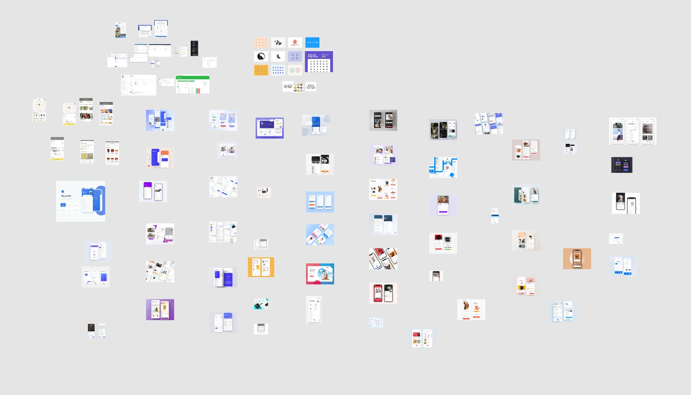
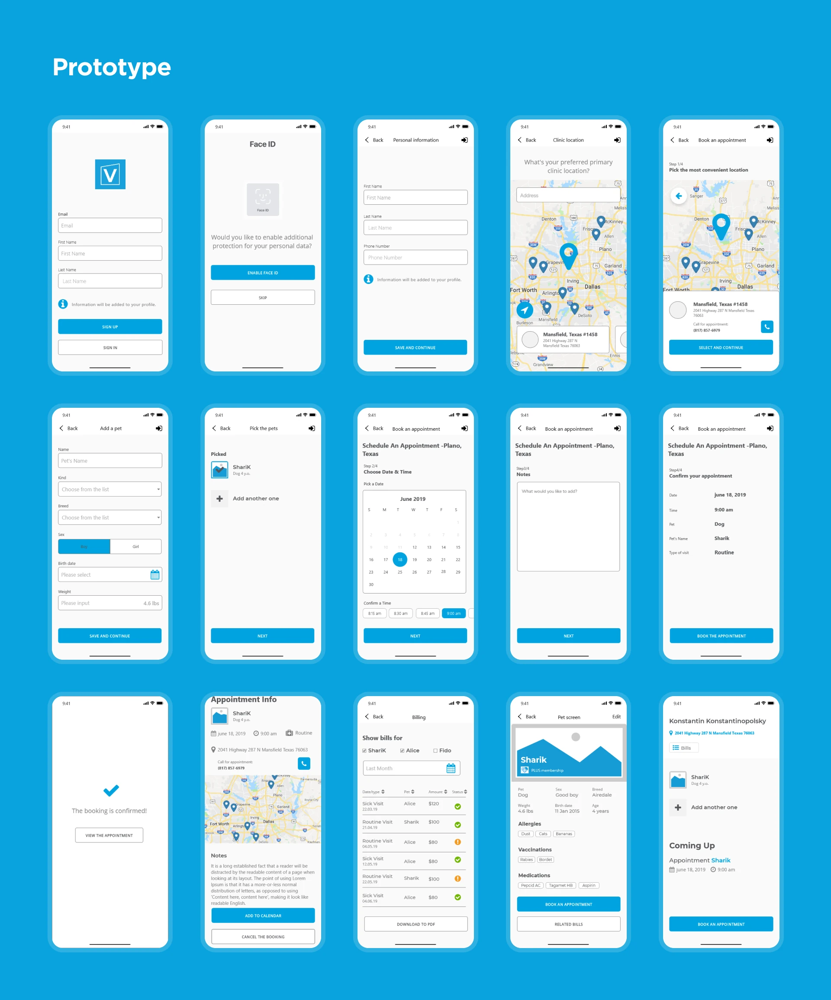
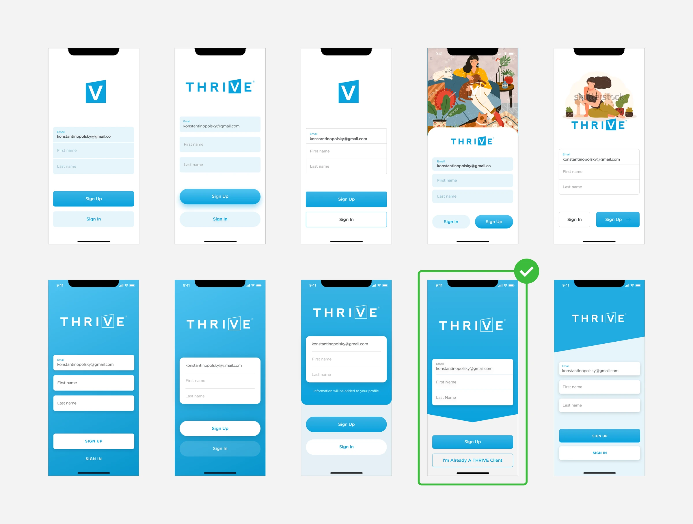
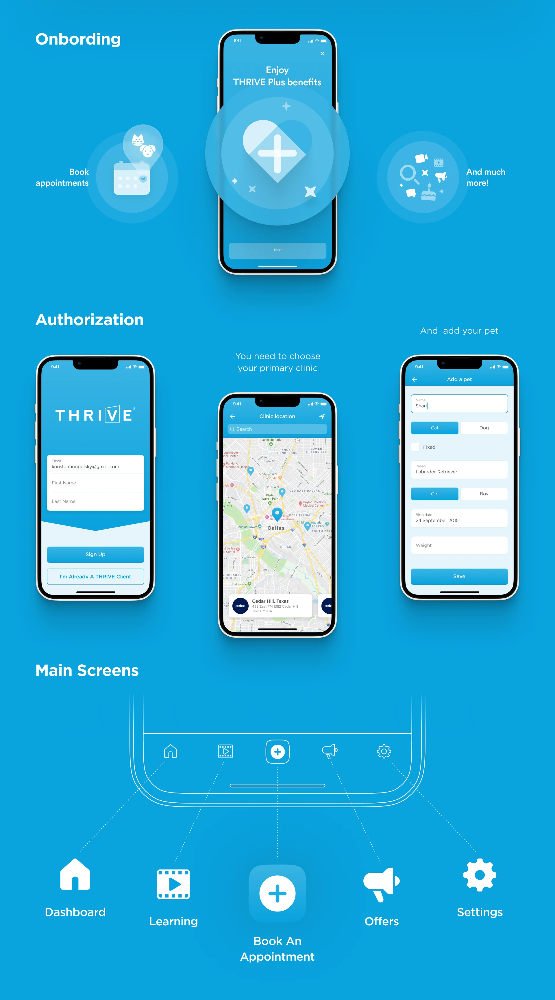
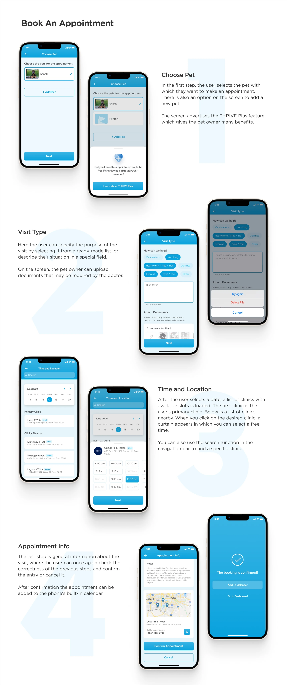
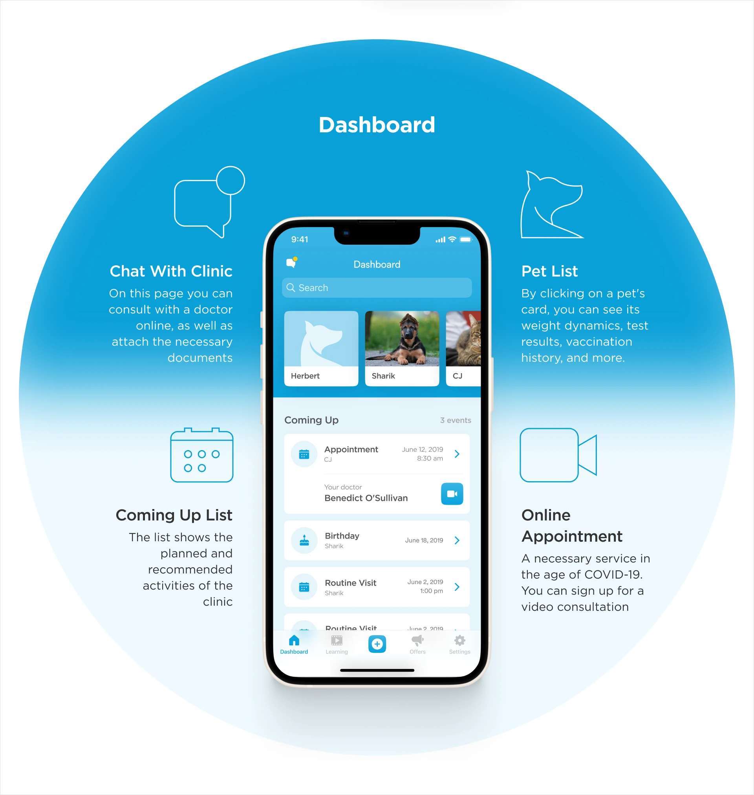
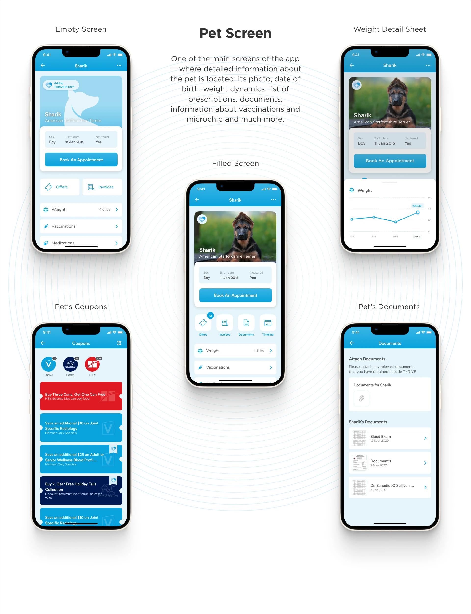
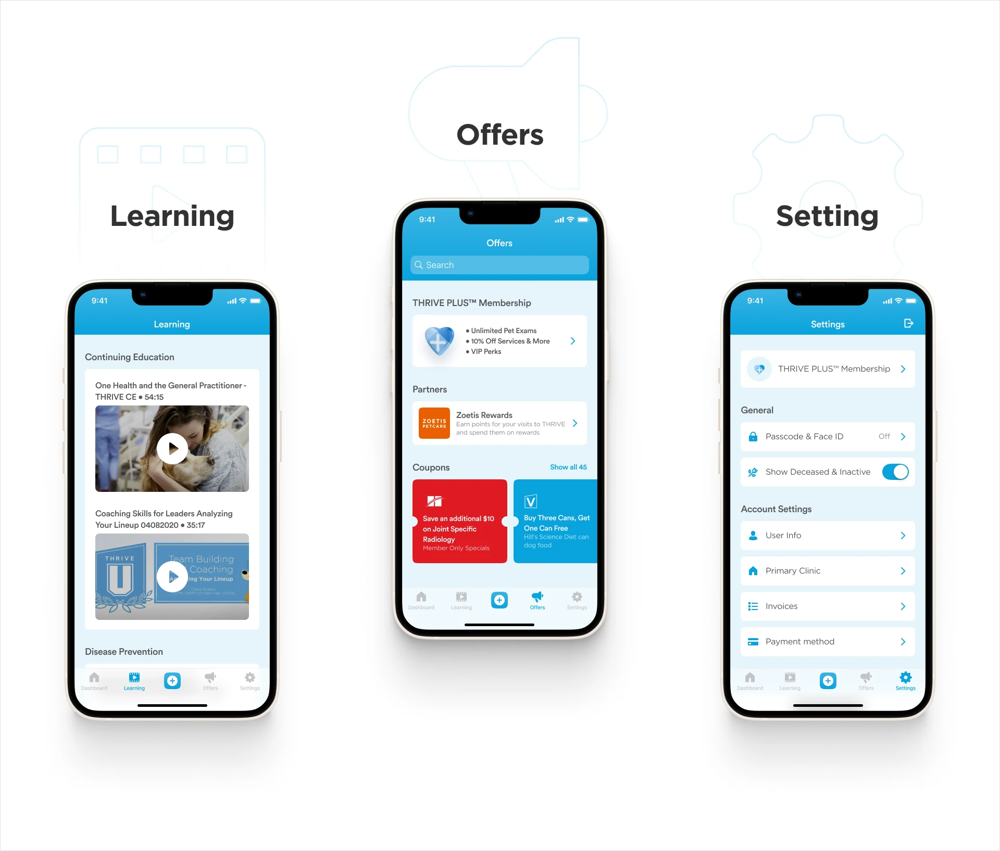
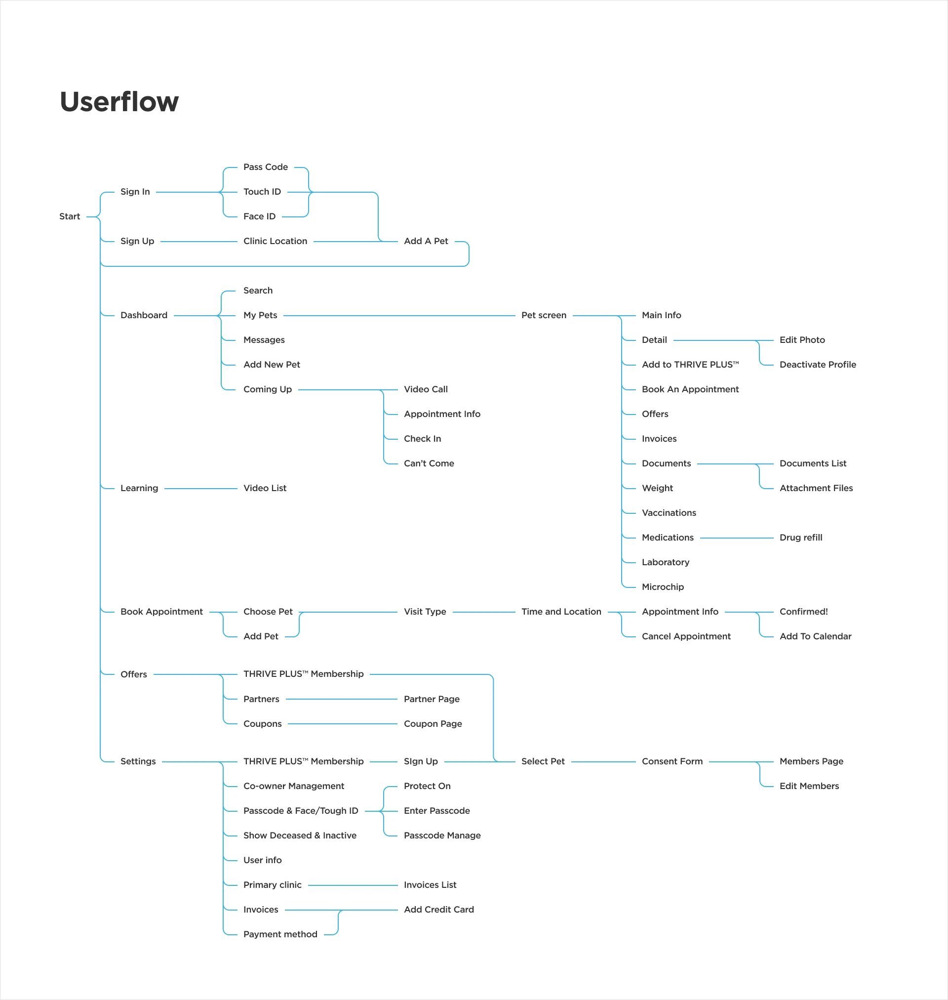
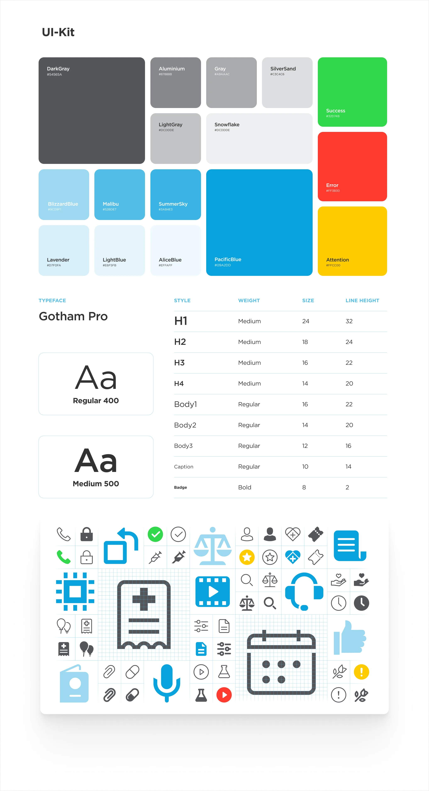
Outcome
The application transferred the desktop service’s functionality to mobile and extended it with platform-specific capabilities. It was released in the App Store and received positive client feedback.
The project made prototyping a central part of my practice: a way to align stakeholders, expose architectural problems early, and focus on the experience before polishing its surface.
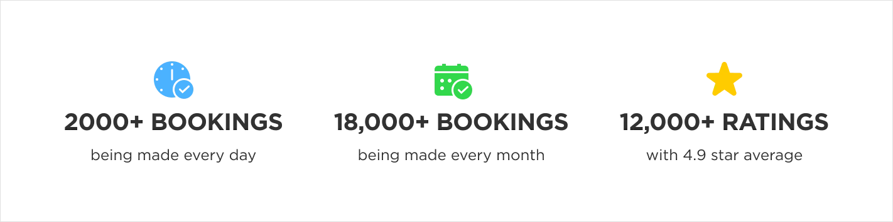

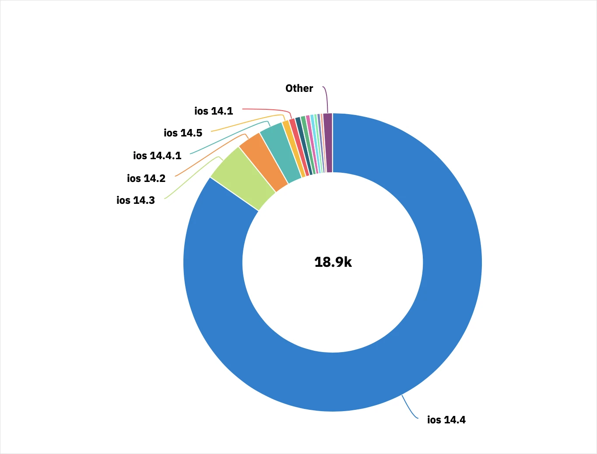
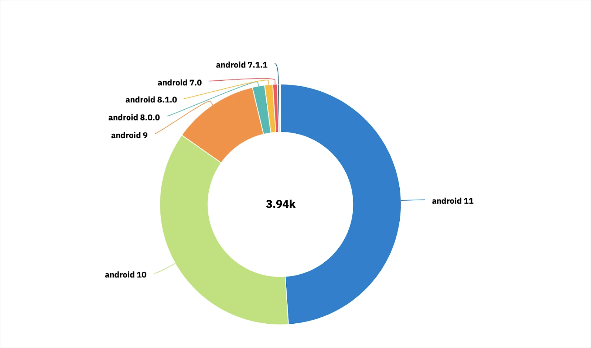
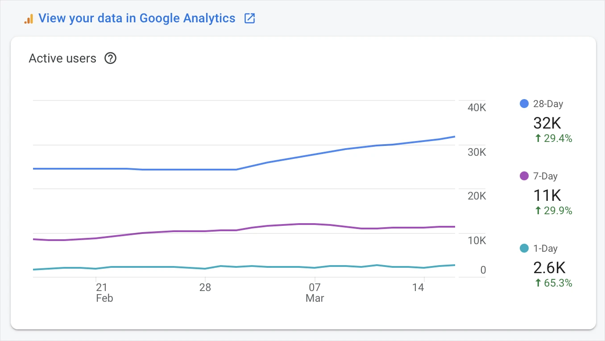
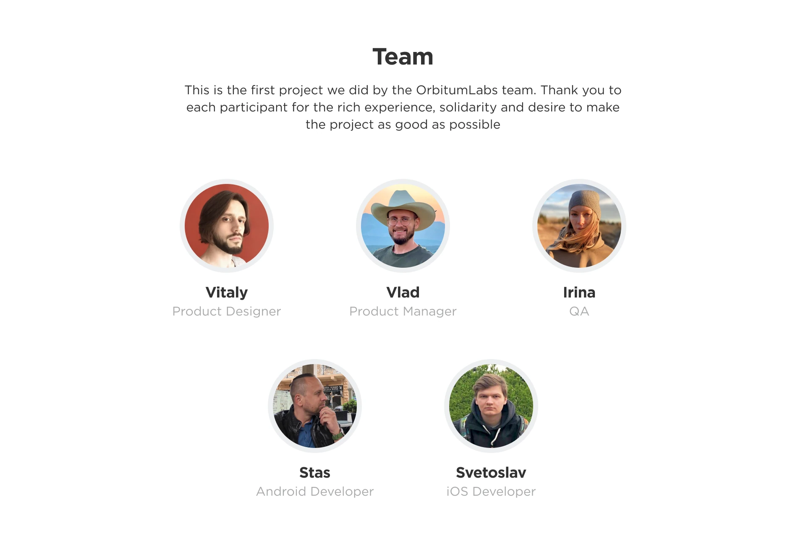